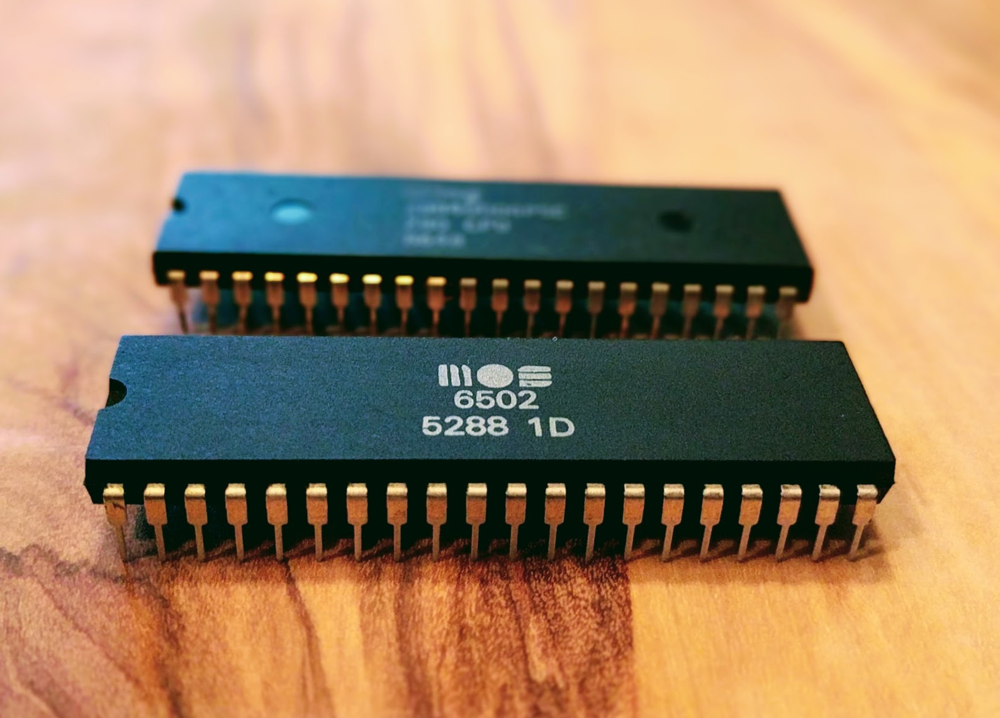
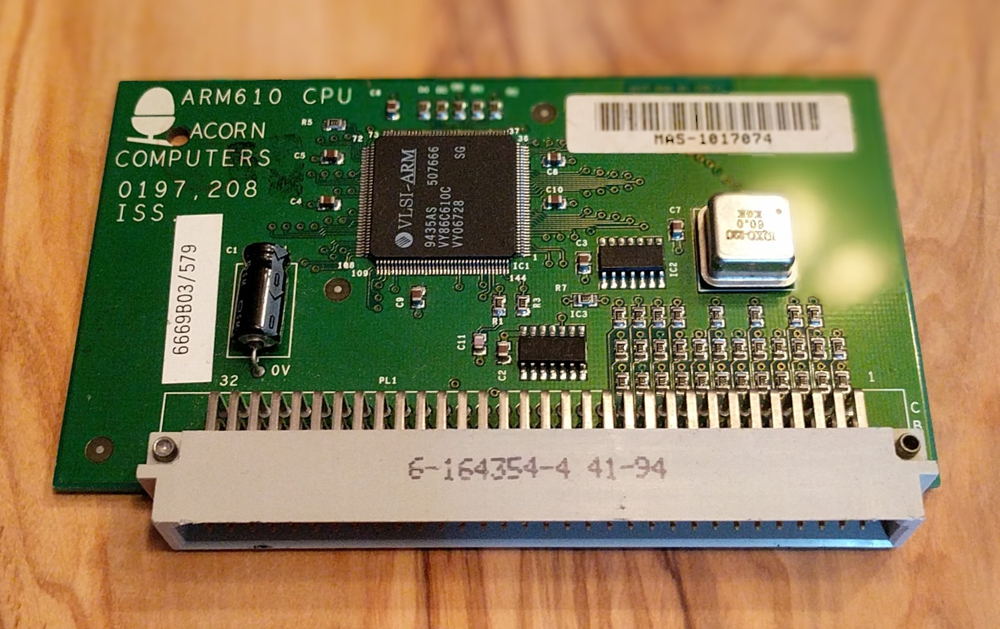

What Has My Compiler Done for Me Lately?
Unbolting the Compiler's Lid
Matt Godbolt, DRW Trading@mattgodbolt matt@godbolt.org
About me


My goals
- Un-scary-fy assembler
- Appreciate your compiler!
Outline
- Compiler Explorer story
- Assembly 101
- What has my compiler done for me lately?
- Behind the scenes of Compiler Explorer
Backstory
int sum(const vector<int> &v) {
int result = 0;
for (size_t i = 0; i < v.size(); ++i)
result += v[i];
return result;
}
int sum(const vector<int> &v) {
int result = 0;
for (int x : v) result += x;
return result;
}Is one better than the other?
WARNING
- Reading assembly alone can be misleading
- Always measure too
x86 Assembly 101
Registers
rax,rbx,rcx,rdx,rsp,rbp,rsi,rdi,r8-r15xmm0-xmm15rdi,rsi,rdx... argumentsraxis return value
Registers
| 63...56 | 55...48 | 47...40 | 39...32 | 31...24 | 23...16 | 15...8 | 7...0 |
|---|---|---|---|---|---|---|---|
| rax | |||||||
| (zeroed on write) | eax | ||||||
| ax | |||||||
| ah | |||||||
| al | |||||||
Instructions
op
op dest
op dest, src
op dest, src1, src2
opis e.g.call,ret,add,sub,cmp...dest,srcis register or memory reference:
[base + reg1opt + reg2*(1, 2, 4 or 8)opt]
(Intel asm syntax)
Instructions
mov eax, DWORD PTR [r14]
add rax, rdi
add eax, DWORD PTR [r14+4]
sub eax, DWORD PTR [r14+4*rbx]
lea rax, [r14+4*rbx]
xor edx, edx
int eax = *r14; // int *r14;
eax += r14[1];
rax += rdi;
eax -= r14[rbx];
int *rax = &r14[rbx];
edx = 0;
Summary
- Registers:
rax,rbx,rcx... - Size:
rax,eax,ax... - Params:
rdi,rsi,rdx,rcx... - Result:
rax op dest, srcdest,srcare registers or memory
Where were we?
int sum(const vector<int> &v) {
int result = 0;
for (size_t i = 0; i < v.size(); ++i)
result += v[i];
return result;
}
int sum(const vector<int> &v) {
int result = 0;
for (int x : v) result += x;
return result;
}Which is better?
Compiler Explorer v0.1
$ g++ /tmp/test.cc -O2 -c -S -o -masm=intel - \
| c++filt \
| grep -vE '\s+\.'
sum(std::vector<int, std::allocator<int> > const&):
.LFB786:
mov rcx, QWORD PTR [rdi]
mov rax, QWORD PTR 8[rdi]
sub rax, rcx
shr rax, 2
mov rsi, rax
...Compiler Explorer v0.1
Not very pretty
To the web!
Demo
/// g71:-O2 -std=c++1z -march=haswell
// setup
#include <numeric>
#include <vector>
using namespace std;
int sum(const vector<int> &v) {
int result = 0;
for (size_t i = 0; i < v.size(); ++i)
result += v[i];
return result;
}
Walkthrough
; rdi = const vector<int> *
mov rdx, QWORD PTR [rdi] ; rdx = *rdi ≡ begin()
mov rcx, QWORD PTR [rdi+8] ; rcx = *(rdi+8) ≡ end()
template<typename T> struct _Vector_impl {
T *_M_start;
T *_M_finish;
T *_M_end_of_storage;
};
Traditional
sub rcx, rdx ; rcx = end-begin
mov rax, rcx
shr rax, 2 ; (end-begin)/4
je .L4
add rcx, rdx
xor eax, eax
size_t size() const noexcept {
return _M_finish - _M_start;
}Range
xor eax, eax
cmp rdx, rcx ; begin==end?
je .L4
auto __begin = begin(v);
auto __end = end(v);
for (auto __it = __begin;
__it != __end;
++it)
Walkthrough
; rcx ≡ end, rdx = begin, eax = 0
.L3:
add eax, DWORD PTR [rdx] ; eax += *rdx
add rdx, 4 ; rdx += sizeof(int)
cmp rdx, rcx ; is rdx == end?
jne .L3 ; if not, loop
ret ; we're done
Backstory
So, which approach is best?
Also
- Optimizer settings are important
std::accumulate
What has my compiler done for me lately?
Multiplication
/// g71:-O2 -std=c++1z -march=haswell
int mulByY(int x, int y) {
return x * y;
}
mulByY(int, int):
mov eax, edi
imul eax, esi
ret
Multiplication
1101 (13)
x 0101 (5)
--------
1101
0000
1101
+ 0000
--------
01000001 (65)
That's a lot of additions!
Haswell 32-bit multiply - 4 cycles
Multiplication
/// g71:-O2 -std=c++1z -march=haswell
int mulByConstant(int x) { return x * 2; }
Multiplication
/// g71:-O2 -std=c++1z -march=haswell
int mulBy65599(int a) {
return (a << 16) + (a << 6) - a;
// ^ ^
// a * 65536 |
// a * 64
// 65536a + 64a - 1a = 65599a
} Division
int divByY(int x, int y) {
return x / y;
}
int modByY(int x, int y) {
return x % y;
}
divByY(int, int):
mov eax, edi
cdq
idiv esi
ret
modByY(int, int):
mov eax, edi
cdq
idiv esi
mov eax, edx
ret
Haswell 32-bit divide - 22-29 cycles!
Division
/// g71:-O2 -std=c++1z -march=haswell
unsigned divByConstant(unsigned x) { return x / 2; }
Division
mov eax, edi ; eax = x
mov edx, 0xaaaaaaab
mul edx ; eax:edx = x * 0xaaaaaaab
mov eax, edx ; (x * 0xaaaaaaab) >> 32
; ≡ (x * 0xaaaaaaab) / 0x10000000
; ≡ x * 0.6666666667
shr eax ; x * 0.333333333
ret
Modulus
int modBy3(unsigned x) {
return x % 3;
}
mov eax, edi
mov edx, 0xaaaaaaab
mul edx
mov eax, edx
shr eax
lea eax, [rdx+rdx*2]
sub edi, eax
mov eax, edi
ret
Why modulus?
- Bucket selection in hash maps
- libc++ special-cases power-of-two
- boost multi_index
Counting bits
/// g71:-O2 -std=c++1z -march=haswell
int countSetBits(int a) {
int count = 0;
while (a) {
count++;
a &= (a-1);
}
return count;
}
Summation
/// g71:-O2 -std=c++1z -march=haswell
constexpr int sumTo(int x) {
int sum = 0;
for (int i = 0; i <= x; ++i)
sum += i;
return sum;
}
int main(int argc, const char *argv[]) {
return sumTo(20);
}
Sum(x)
\[
\begin{aligned}
\sum{x} &≡ \frac{x(x + 1)}{2} \\
&≡ x + \frac{x(x - 1)}{2}
\end{aligned}
\]
Virtual methods
/// g71:-O2 -std=c++1z -march=haswell
struct Transform {
virtual int transform(
int i) const = 0;
};
int sum(const Transform &t,
int n) {
int result = 0;
for (int i = 0; i <= n; ++i)
result += t.transform(i);
return result;
}
.L3:
mov rax, QWORD PTR [rbp+0]
mov esi, ebx
mov rdi, rbp
add ebx, 1
call [QWORD PTR [rax]]
add r12d, eax
cmp ebx, r13d
jne .L3
Virtual methods
/// g71:-O2 -std=c++1z -march=haswell
// setup
struct Transform {
virtual int transform(int i) const = 0;
};
int sum(const Transform &t,
int n) {
int result = 0;
for (int i = 0; i <= n; ++i)
result += t.transform(i);
return result;
}
struct Noop : Transform {
int transform (int i)
const override {
return i;
}
};
.L5:
add ebx, 1
add ebp, eax
cmp ebx, r12d
je .L11
.L6:
mov rax, QWORD PTR [r13+0]
mov rdx, QWORD PTR [rax]
mov eax, ebx
cmp rdx, Noop::transform(int)
je .L5
What has my compiler done for me lately?
A lot!
How it works
How it works - Backend
- Written in
node.js - Runs on Amazon
node.js
function compile(req, res, next) {
// exec req.compiler, feed it req.body
// parse output, return via res
}
var webServer = express();
var apiHandler = express.Router();
apiHandler.param('compiler',
function (req, res, next, compiler) {
req.compiler = compiler;
next();
});
apiHandler.post('/compiler/:compiler/compile', compile);
webServer.use('/api', apiHandler);
webServer.listen(10240);
Amazon EC2
- Edge cache
- Load balancer
- Virtual machines
- Docker images
- Shared compiler storage
The compilers
- Built through docker images
- Compilers stored on S3
- OSS ones publically available
- MS compilers via WINE
How it works - security
- Compilers: huge attack vector
- Principle of "what's the worst could happen"
- Docker
LD_PRELOAD
How it works - Frontend
- Microsoft's Monaco
- GoldenLayout
Thank you!
The code
- github.com/mattgodbolt/compiler-explorer
- github.com/mattgodbolt/compiler-explorer-image
- Running locally is easy!
$ make
- More in next C++ Weekly
Thanks
- Thanks to contributors:
- Rubén Rincón
- Gabriel Devillers
- Simon Brand, Johan Engelen, Jared Wyles
- ...and the rest!
- Thanks to Patreon folks
- Thanks to awesome C++ community
- Thanks to you!
Go read some assembly!
{ gcc , cppx , d , swift , haskell , go , ispc }.godbolt.org